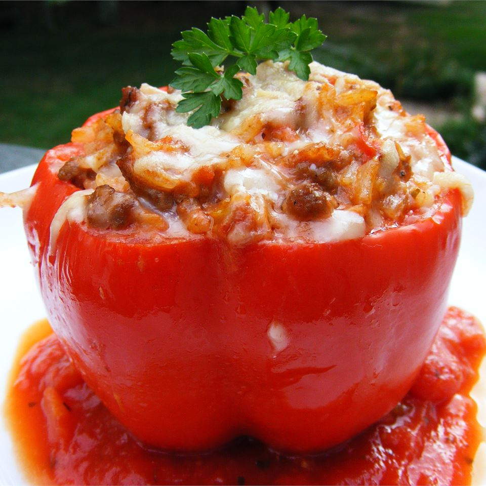

Recipe for Bolognese Stuffed Bell Peppers

Description
This Bolognese filling is spicy, meaty, and creamy.
If you're in a hurry you can serve it over pasta instead of
filling the peppers; just omit the rice or orzo.
Ingredients
- 1/2 cup cooked rice
- 2 tablespoons olive oil, divide
- 1/8 cup minced carrots
- 1/8 cups celery
- 6 bell peppers (any color) stems and seeds removed, cut in half lengthwise
- ½ pound ground beef
- ¼ pound pancetta or lightly smoked bacon, diced
- 1 ½ cups prepared marinara sauce
- ¼ cup red wine
- ½ teaspoon red pepper flakes
- ⅓ cup heavy cream
- ½ cup grated Parmesan cheese, divided
Prep Time
Prep: 30 mins; Cooking: 1hr 20 mins; Servings: 6; Yield: 6 servings;
Total: 1h 50 mins
Steps
- Preheat oven to 375 degrees F (190 degrees C).
- Heat 1 tablespoon olive oil in a skillet over medium heat.
Stir in the carrots and celery; cook and stir until the vegetables
are tender, about 5 minutes.
- Stir in ground beef and pancetta,
and cook until browned and crumbled;
drain off any excess liquid, and return to heat.
Add marinara sauce, wine, and red pepper flakes,
and simmer for 10 minutes. Stir in cream, half of the
Parmesan cheese, and rice. Simmer 5 minutes more, or until
most liquid has absorbed.
- Place peppers in a shallow baking dish, and fill with beef mixture.
Drizzle with remaining olive oil and top with remaining Parmesan cheese.
- Bake, uncovered, for 30 minutes in the preheated oven.
Serve hot.